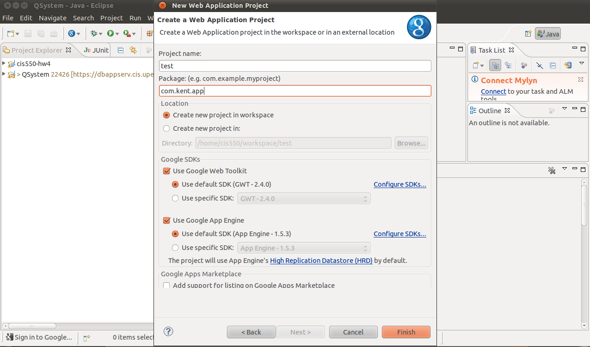
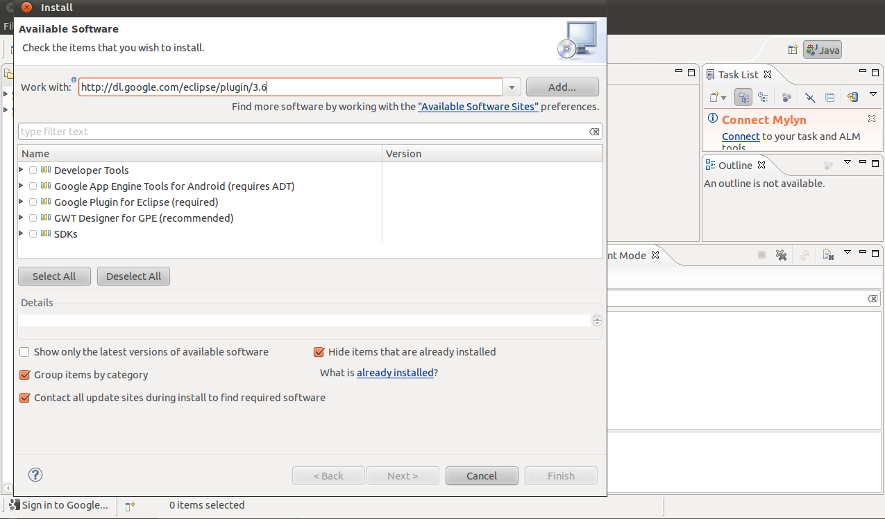
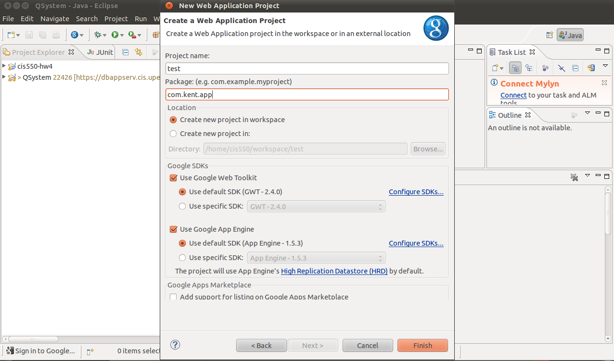

感謝您對「自由軟體鑄造場」的支持與愛護，十多年來「自由軟體鑄造場」受中央研究院支持，並在資訊科學研究所以及資訊科技創新研究中心執行，現已完成階段性的任務。 原網站預計持續維運至 2021年底，網站內容基本上不會再更動。本網站由 Denny Huang 備份封存。
也紀念我們永遠的朋友 李士傑先生（Shih-Chieh Ilya Li）。
也紀念我們永遠的朋友 李士傑先生（Shih-Chieh Ilya Li）。
什麼是資源表列?
GWT
Rate this listing
0 vote
GWT 是一個由 Google 所開發的開源 AJAX 網路開發框架。 由於許多傳統 Java 的開發人員及後端工程師，並不見得有前端工程師或網路開發者一樣的技術背景和經驗, 因此開發網站往往對他們來講有著陡峭的學習曲線。 GWT 便是為了簡化開發人員使用Java 作為橫跨前後端的技術整合及溝通之實作語言。
GWT 將 Java 作為開發的主要語言，因而 Java 的資源都成為 GWT 開發人員可以享受的工具。 且團隊可以很輕易地找到會寫 Java 的開發者，亦可使用 Eclipse 的開發工具來實現 GWT。GWT 讓開發人員編寫 Java 代碼在透過 GWT 編譯器，把 Java 轉成高效的 JavaScript 代碼。 GWT 的內建函式庫跟其所提供的框架延展性，讓開發人員可以快速地寫成互動性強的應用程式。
GWT 將 Java 作為開發的主要語言，因而 Java 的資源都成為 GWT 開發人員可以享受的工具。 且團隊可以很輕易地找到會寫 Java 的開發者，亦可使用 Eclipse 的開發工具來實現 GWT。GWT 讓開發人員編寫 Java 代碼在透過 GWT 編譯器，把 Java 轉成高效的 JavaScript 代碼。 GWT 的內建函式庫跟其所提供的框架延展性，讓開發人員可以快速地寫成互動性強的應用程式。
從本篇開始, 筆者將開始連載一系列的GWT的相關文章.透過解說, 實例, 實作來幫助讀者了解GWT。
作為系列文章的第一文, 本文是熱身。 將介紹一些 GWT 的入門知識，並帶領讀者使用 Google 所做的Eclipse 外掛來實作運用GWT。
若您的 Eclipse 的版本不是 3.6，則您可依具您的版本號輸入不同的網址
例如： 若為 Eclipse 3.5 則可輸入
在短暫的搜尋之後，Eclipse會列出幾個套件。 為了簡化流程, 讀者可以全部勾選。
在安裝好了以後, 重啓 Eclipse 即可。

輸入想要的專案名稱.本文將會用test這個名字。

Google 的 Eclipse Plugin 在生成新的專案時會產生一個範例專案。我們先試著執行這個專案以確定安裝程序都順利。 若是一切都順利(設定維持預設), 讀者應該可以開啓瀏覽器後輸入"https://127.0.0.1:8888/Test.html?gwt.codesvr=127.0.0.1:9997"，即可看到以下畫面：

輸入名字後會看到以下畫面：

接下來, 我們試著理解這個GWT專案是如何運作的。
我們先開啓 Test.java。 可以先注意到 Test 這個類別是實作 EntryPoint 這個介面。在一個 GWT 專案中, 實作 EntryPoint 的類別會是第一個被載入的程式。從實作的函式 onModuleLoad 這個名稱就可以猜到一二.。現在我們進入這個函式裡一探究竟。
曾經有 Java 使用者圖形界面 (GUI) 編程經驗的讀者，應該會對代碼有一定的熟悉感, 因為 GWT 的內建函式庫有承襲一些Java GUI 編程的規律。 內建的 Button 類別在宣告以後, 可以在傳入一個 ClickHandler 的類別來決定使用者按完按鈕後的後續動作。
在 GWT 裡, 有一個叫做 RootPanel 的物件，此物件，在 GWT 主要用來放置各種界面工具 (widget)。 透過 RootPanel.get("x").add(widget) 這行代碼，GWT 會把 widget 加到頁面上，更具體地說，加到HTML id 是 "x" 的地方 (主頁HTML的代碼可以在war這個資料夾下找到)。GWT 有各式各樣的內建界面工具可以使用，在本實作專案中我們只有用到少數幾個，有興趣的讀者可以自己玩玩看不同的工具。
最後,筆者將介紹一下 GWT的RPC (遠端過程調用)。作為一個網路應用程式，客戶端程式需要與伺服器溝通。 GWT 的 RPC 便是要讓應用程式透過 HTTP 交換 Java 物件的這個過程更加容易。
您也許注意到這行代碼：
此外，之後程序也有使用到 greetService 這個變數。 這個便是應用到 RPC 的實例。在客戶端，開發者需要編寫 stub 函式, 用意在於讓程式知道函式的各種輸入(請看GreetingServiceAsync.java)。實際的處理代碼則是編寫在伺服器端(見GreetingServiceImpl.java)。注意，這個伺服器端的代碼需要繼承 RemoteServiceServlet ，然後，實作 GreetingService。
RemoteServiceServlet 的繼承使得程序員不需要處理序列化的問題而交由內建已經實做的類別來執行以增加開發效率跟降低出錯率。 透過這樣的方式,開發人員能夠輕鬆寫出與伺服器互動的程序。
*以下是我的專案的代碼:
這次的重點主要是放在實際運用函式庫, 透過實例跟讀者分享一些常用到的元件. 本系列接下來兩篇文章都會介紹一個簡易圖片網路應用程式的開發. 希望通過實作讓讀者對GWT更瞭解. GWT是個很龐大也很複雜的網路框架. 要能夠完全知道,摸透這個框架只有靠長時間的實際操作. 作為入門, 讀者不妨多注意這系列文章中被使用的GUI元件, 因為筆者盡量在選擇範例時, 會優先考慮常用會很好利用的工具.
本篇文章會帶讀者走過重要的開發環節但是會把部分的細節省略希望讀者可以邊讀邊作, 因為筆者相信這樣子的學習成效是最大的.
做完這之後,我們就可以專心定義我們的程式了.
筆者將首先定義什麼是使用者的社交網路數據. 這份數據會有XML的格式. 以下是一個範例:
每一個使用者都會有id, name, email, age, gender, circle, 跟 photo. app將會讀入這些資料, 處理, 然後呈現在螢幕上給使用者.
首先當瀏覽器載入時, app要出現一個讓使用者填入數據的window. 我們將以下的code填入client資料夾下的Test.java的onModuleLoad這個函式來達成:
DialogBox是一個很方便的內建元件. 在建構UI時, 如果需要跟使用者確認, 建立一個DialogBox物件可以讓開發人員不用在主頁上另劃區塊, 對於分離程式邏輯也有很好的幫助. 再來, VerticalPanel則是一個容器.在這裡,VerticalPanel是用來放置一個TextArea, 也就是我們用來插入XML的地方. Button上次已經有提及這裡我們會為Button加一個ClickHandler以在使用者按擊按鈕時告知程式要處理XML. 如果有GUI開發經驗的人應該對這些元件的功能甚至名稱都不陌生. GWT的開發邏輯其實跟很多其他的函式庫是很像的.
我們將之前定義的社交網路資訊黏貼到上圖的對話框中然後輸入.接下來,這些數據應該要被後端程式處理. 這裡,我們使用一個名叫visualizeInitialPerson()的函式來呼叫處理.
visualizaeInitialPerson()這個函式是個GWT RPC. 不熟悉這個詞的讀者可以參考上一篇有關的介紹. 這個函式跟伺服器溝通已得到所求的數據. 在app的架構下, 伺服器會分析語法並將數據傳回來. 這個目的在于用戶端應該只有呈現不應該有太多的處理. 之後user會被存成JSON的格式是為了方便圖形化我們的數據.在下一篇裡, 我們將會探討如何在GWT裡直接寫JavaScript跟利用JavaScript的函式庫. 以下是visualizaeInitialPerson():
從上面,讀者可以發現我們有使用到新的類別Visualization跟XMLandJSON.
Visualization主要是處理圖像化的部分屬於比較進階的內容.這個在下一篇會有敘述.
XMLandJSON主要是用於分析XML跟轉化JSON格式. 讀者可以利用GWT的XMLParser來處理數據. XMLParser的用法跟Java XML parser基本一樣, 故在此不再贅述.至於轉換JSON物件, 讀者可以參考com.google.gwt.json.client這個包裝下的函式.比較會用到的類別有JSONArray, JSONNumber, JSONObject, 以及JSONString. 以下範例將一個XML Node轉化為JSONObject
到這裡, 讀者已經有很多需要消化的了. 讀者可以試著把目前為止的功能做出來.下次我們將會介紹JSNI的使用並完成app.
GWT 將 Java 作為開發的主要語言，因而 Java 的資源都成為 GWT 開發人員可以享受的工具。 且團隊可以很輕易地找到會寫 Java 的開發者，亦可使用 Eclipse 的開發工具來實現 GWT。GWT 讓開發人員編寫 Java 代碼在透過 GWT 編譯器，把 Java 轉成高效的 JavaScript 代碼。 GWT 的內建函式庫跟其所提供的框架延展性，讓開發人員可以快速地寫成互動性強的應用程式。
Chapter 1 - 基礎安裝及運作
GWT 是一個由 Google 所開發的開源 AJAX 網路開發框架。 由於許多傳統 Java 的開發人員及後端工程師，並不見得有前端工程師或網路開發者一樣的技術背景和經驗, 因此開發網站往往對他們來講有著陡峭的學習曲線。 GWT 便是為了簡化開發人員使用Java 作為橫跨前後端的技術整合及溝通之實作語言。GWT 將 Java 作為開發的主要語言，因而 Java 的資源都成為 GWT 開發人員可以享受的工具。 且團隊可以很輕易地找到會寫 Java 的開發者，亦可使用 Eclipse 的開發工具來實現 GWT。GWT 讓開發人員編寫 Java 代碼在透過 GWT 編譯器，把 Java 轉成高效的 JavaScript 代碼。 GWT 的內建函式庫跟其所提供的框架延展性，讓開發人員可以快速地寫成互動性強的應用程式。
從本篇開始, 筆者將開始連載一系列的GWT的相關文章.透過解說, 實例, 實作來幫助讀者了解GWT。
作為系列文章的第一文, 本文是熱身。 將介紹一些 GWT 的入門知識，並帶領讀者使用 Google 所做的Eclipse 外掛來實作運用GWT。
安裝說明
先前有提到 GWT 因使用 Java 加上 Google 釋出的相關開發工具，而編寫 GWT 最便利的方式就是用在 Java 世界裡被廣泛使用的 Eclipse 開發環境。Eclipse 具有非常多內建的工具，加上它的套件管理系統跟維護社群，開發者可以很輕易的使用現有的工具來達到有效開發的目的。本文所使用的工具是 Eclipse 所以基本上只要環境支援Eclipse就即可。以下範例將使用 Eclipse 3.6。安裝 Eclipse
請先至 Eclipse 官網，依照您的作業系統下載安裝檔，並執行安裝，安裝過程相當容易，請依照安裝套件下一步即可。
若您的系統為 Ubuntu 即可使用以下指令直接安裝即可。
apt-get install eclipse
開啟相關套件
開啟 Eclipse ，於上排功能列，選擇[Help -> Install New Software] 將會開啟如下圖操作畫面，並於 Work with 欄位輸入以下網址 [ https://dl.google.com/eclipse/plugin/3.6 ]
若您的 Eclipse 的版本不是 3.6，則您可依具您的版本號輸入不同的網址
例如： 若為 Eclipse 3.5 則可輸入
https://dl.google.com/eclipse/plugin/3.5在短暫的搜尋之後，Eclipse會列出幾個套件。 為了簡化流程, 讀者可以全部勾選。
在安裝好了以後, 重啓 Eclipse 即可。
使用說明
以下的篇幅來說明 GWT 的基本架構跟用法。 首先先新創一個 "Web Application Project" 的專案輸入想要的專案名稱.本文將會用test這個名字。

Google 的 Eclipse Plugin 在生成新的專案時會產生一個範例專案。我們先試著執行這個專案以確定安裝程序都順利。 若是一切都順利(設定維持預設), 讀者應該可以開啓瀏覽器後輸入"https://127.0.0.1:8888/Test.html?gwt.codesvr=127.0.0.1:9997"，即可看到以下畫面：
輸入名字後會看到以下畫面：
接下來, 我們試著理解這個GWT專案是如何運作的。
我們先開啓 Test.java。 可以先注意到 Test 這個類別是實作 EntryPoint 這個介面。在一個 GWT 專案中, 實作 EntryPoint 的類別會是第一個被載入的程式。從實作的函式 onModuleLoad 這個名稱就可以猜到一二.。現在我們進入這個函式裡一探究竟。
曾經有 Java 使用者圖形界面 (GUI) 編程經驗的讀者，應該會對代碼有一定的熟悉感, 因為 GWT 的內建函式庫有承襲一些Java GUI 編程的規律。 內建的 Button 類別在宣告以後, 可以在傳入一個 ClickHandler 的類別來決定使用者按完按鈕後的後續動作。
在 GWT 裡, 有一個叫做 RootPanel 的物件，此物件，在 GWT 主要用來放置各種界面工具 (widget)。 透過 RootPanel.get("x").add(widget) 這行代碼，GWT 會把 widget 加到頁面上，更具體地說，加到HTML id 是 "x" 的地方 (主頁HTML的代碼可以在war這個資料夾下找到)。GWT 有各式各樣的內建界面工具可以使用，在本實作專案中我們只有用到少數幾個，有興趣的讀者可以自己玩玩看不同的工具。
最後,筆者將介紹一下 GWT的RPC (遠端過程調用)。作為一個網路應用程式，客戶端程式需要與伺服器溝通。 GWT 的 RPC 便是要讓應用程式透過 HTTP 交換 Java 物件的這個過程更加容易。
您也許注意到這行代碼：
private final GreetingServiceAsync greetingService = GWT
.create(GreetingService.class);
此外，之後程序也有使用到 greetService 這個變數。 這個便是應用到 RPC 的實例。在客戶端，開發者需要編寫 stub 函式, 用意在於讓程式知道函式的各種輸入(請看GreetingServiceAsync.java)。實際的處理代碼則是編寫在伺服器端(見GreetingServiceImpl.java)。注意，這個伺服器端的代碼需要繼承 RemoteServiceServlet ，然後，實作 GreetingService。
RemoteServiceServlet 的繼承使得程序員不需要處理序列化的問題而交由內建已經實做的類別來執行以增加開發效率跟降低出錯率。 透過這樣的方式,開發人員能夠輕鬆寫出與伺服器互動的程序。
*以下是我的專案的代碼:
package com.kent.app.client;
import com.kent.app.shared.FieldVerifier;
import com.google.gwt.core.client.EntryPoint;
import com.google.gwt.core.client.GWT;
import com.google.gwt.event.dom.client.ClickEvent;
import com.google.gwt.event.dom.client.ClickHandler;
import com.google.gwt.event.dom.client.KeyCodes;
import com.google.gwt.event.dom.client.KeyUpEvent;
import com.google.gwt.event.dom.client.KeyUpHandler;
import com.google.gwt.user.client.rpc.AsyncCallback;
import com.google.gwt.user.client.ui.Button;
import com.google.gwt.user.client.ui.DialogBox;
import com.google.gwt.user.client.ui.HTML;
import com.google.gwt.user.client.ui.Label;
import com.google.gwt.user.client.ui.RootPanel;
import com.google.gwt.user.client.ui.TextBox;
import com.google.gwt.user.client.ui.VerticalPanel;
/**
* Entry point classes define onModuleLoad().
*/
public class Test implements EntryPoint {
/**
* The message displayed to the user when the server cannot be reached or
* returns an error.
*/
private static final String SERVER_ERROR = "An error occurred while "
+ "attempting to contact the server. Please check your network "
+ "connection and try again.";
/**
* Create a remote service proxy to talk to the server-side Greeting service.
*/
private final GreetingServiceAsync greetingService = GWT
.create(GreetingService.class);
/**
* This is the entry point method.
*/
public void onModuleLoad() {
final Button sendButton = new Button("Send");
final TextBox nameField = new TextBox();
nameField.setText("GWT User");
final Label errorLabel = new Label();
// We can add style names to widgets
sendButton.addStyleName("sendButton");
// Add the nameField and sendButton to the RootPanel
// Use RootPanel.get() to get the entire body element
RootPanel.get("nameFieldContainer").add(nameField);
RootPanel.get("sendButtonContainer").add(sendButton);
RootPanel.get("errorLabelContainer").add(errorLabel);
// Focus the cursor on the name field when the app loads
nameField.setFocus(true);
nameField.selectAll();
// Create the popup dialog box
final DialogBox dialogBox = new DialogBox();
dialogBox.setText("Remote Procedure Call");
dialogBox.setAnimationEnabled(true);
final Button closeButton = new Button("Close");
// We can set the id of a widget by accessing its Element
closeButton.getElement().setId("closeButton");
final Label textToServerLabel = new Label();
final HTML serverResponseLabel = new HTML();
VerticalPanel dialogVPanel = new VerticalPanel();
dialogVPanel.addStyleName("dialogVPanel");
dialogVPanel.add(new HTML("Sending name to the server:"));
dialogVPanel.add(textToServerLabel);
dialogVPanel.add(new HTML("Server replies:"));
dialogVPanel.add(serverResponseLabel);
dialogVPanel.setHorizontalAlignment(VerticalPanel.ALIGN_RIGHT);
dialogVPanel.add(closeButton);
dialogBox.setWidget(dialogVPanel);
// Add a handler to close the DialogBox
closeButton.addClickHandler(new ClickHandler() {
public void onClick(ClickEvent event) {
dialogBox.hide();
sendButton.setEnabled(true);
sendButton.setFocus(true);
}
});
// Create a handler for the sendButton and nameField
class MyHandler implements ClickHandler, KeyUpHandler {
/**
* Fired when the user clicks on the sendButton.
*/
public void onClick(ClickEvent event) {
sendNameToServer();
}
/**
* Fired when the user types in the nameField.
*/
public void onKeyUp(KeyUpEvent event) {
if (event.getNativeKeyCode() == KeyCodes.KEY_ENTER) {
sendNameToServer();
}
}
/**
* Send the name from the nameField to the server and wait for a response.
*/
private void sendNameToServer() {
// First, we validate the input.
errorLabel.setText("");
String textToServer = nameField.getText();
if (!FieldVerifier.isValidName(textToServer)) {
errorLabel.setText("Please enter at least four characters");
return;
}
// Then, we send the input to the server.
sendButton.setEnabled(false);
textToServerLabel.setText(textToServer);
serverResponseLabel.setText("");
greetingService.greetServer(textToServer,
new AsyncCallback() {
public void onFailure(Throwable caught) {
// Show the RPC error message to the user
dialogBox
.setText("Remote Procedure Call - Failure");
serverResponseLabel
.addStyleName("serverResponseLabelError");
serverResponseLabel.setHTML(SERVER_ERROR);
dialogBox.center();
closeButton.setFocus(true);
}
public void onSuccess(String result) {
dialogBox.setText("Remote Procedure Call");
serverResponseLabel
.removeStyleName("serverResponseLabelError");
serverResponseLabel.setHTML(result);
dialogBox.center();
closeButton.setFocus(true);
}
});
}
}
// Add a handler to send the name to the server
MyHandler handler = new MyHandler();
sendButton.addClickHandler(handler);
nameField.addKeyUpHandler(handler);
}
}
結論
本文介紹了GWT的一些相關知識以及基本的運作結構. 透過GWT, 開發人員可以利用Java編寫前端跟後端的代碼.這使得代碼的統一性比混合式的架構更好.參考資料
- GWT官方網站, https://developers.google.com/web-toolkit/
- GWT RPC官方介紹, https://developers.google.com/web-toolkit/doc/latest/tutorial/RPC
Chapter 2 - GWT 實例實作學習 (A)- 社交網路APP
這次的重點主要是放在實際運用函式庫, 透過實例跟讀者分享一些常用到的元件. 本系列接下來兩篇文章都會介紹一個簡易圖片網路應用程式的開發. 希望通過實作讓讀者對GWT更瞭解. GWT是個很龐大也很複雜的網路框架. 要能夠完全知道,摸透這個框架只有靠長時間的實際操作. 作為入門, 讀者不妨多注意這系列文章中被使用的GUI元件, 因為筆者盡量在選擇範例時, 會優先考慮常用會很好利用的工具.
應用程式說明
在正式開始以前, 我先介紹一下這次的目標.我們想要寫一個接受使用者的社交網路數據然後把它轉化成互動性高的應用程式.這是一個好的GWT應用範例, 因為GWT本來就適合用來開發前端互動性高的程式. 同時這個程式讓讀者在最後可以看到自己的成果. 從現在起, 本文將稱這個應用程式為app. 這篇將會帶讀者做到處理使用者數據跟呈現一般文檔數據.本篇文章會帶讀者走過重要的開發環節但是會把部分的細節省略希望讀者可以邊讀邊作, 因為筆者相信這樣子的學習成效是最大的.
開發流程
我們先把以下的HTML元素加到專案war資料夾中的HTML的body裡面：＜div id="container"＞
＜div id="left-container"＞
＜/div＞
＜div id="center-container"＞
＜table align="center"＞
＜tbody＞＜tr＞
＜td id="nameFieldContainer"＞＜/td＞
＜td id="sendButtonContainer"＞＜/td＞
＜/tr＞
＜tr＞
＜td colspan="2" style="color:red;" id="errorLabelContainer"＞＜/td＞
＜/tr＞
＜/tbody＞＜/table＞
＜div id="infovis"＞＜/div＞
＜/div＞
＜div id="right-container"＞
＜/div＞
＜/div＞
做完這之後,我們就可以專心定義我們的程式了.
筆者將首先定義什麼是使用者的社交網路數據. 這份數據會有XML的格式. 以下是一個範例:
＜!--?xml version="1.0" encoding="UTF-8"?--＞
＜app＞
＜user＞
＜id＞1＜/id＞
＜name＞John＜/name＞
＜email＞john@play.com＜/email＞
＜age＞20＜/age＞
＜gender＞m＜/gender＞
＜circle＞
＜name＞Friends＜/name＞
＜containsfriend＞2＜/containsfriend＞
＜/circle＞
＜circle＞
＜name＞workers＜/name＞
＜containsfriend＞3＜/containsfriend＞
＜/circle＞
＜photo＞
＜photoid＞1＜/photoid＞
＜rating＞6＜/rating＞
＜url＞https://www.instablogsimages.com/images/2006/11/27/miraculous-russian-gazprom-building_4_49.jpg＜/url＞
＜tag＞building＜/tag＞
＜/photo＞
＜photo＞
＜photoid＞2＜/photoid＞
＜rating＞7＜/rating＞
＜url＞https://detroit1701.org/Graphics/Dime%20Building.jpg＜/url＞
＜tag＞building＜/tag＞
＜/photo＞
＜photo＞
＜photoid＞3＜/photoid＞
＜rating＞8＜/rating＞
＜url＞https://gram4u.files.wordpress.com/2009/10/modern-building1.jpg＜/url＞
＜tag＞building＜/tag＞
＜/photo＞
＜/user＞
＜user＞
＜id＞2＜/id＞
＜name＞Cathy＜/name＞
＜email＞cathy@example.com＜/email＞
＜age＞20＜/age＞
＜gender＞f＜/gender＞
＜circle＞
＜name＞Friends＜/name＞
＜containsfriend＞1＜/containsfriend＞
＜containsfriend＞3＜/containsfriend＞
＜/circle＞
＜photo＞
＜photoid＞4＜/photoid＞
＜rating＞10＜/rating＞
＜url＞https://www.baycounty-mi.gov/Images/BuildingAuthority/CountyBuilding.jpg＜/url＞
＜tag＞building＜/tag＞
＜/photo＞
＜photo＞
＜photoid＞5＜/photoid＞
＜rating＞10＜/rating＞
＜url＞https://www.mccullagh.org/db9/1ds2-4/fbi-headquarters-building.jpg＜/url＞
＜tag＞building＜/tag＞
＜/photo＞
＜/user＞
＜user＞
＜id＞3＜/id＞
＜name＞Luke＜/name＞
＜email＞luke@example.com＜/email＞
＜age＞20＜/age＞
＜gender＞m＜/gender＞
＜circle＞
＜name＞Friends＜/name＞
＜containsfriend＞2＜/containsfriend＞
＜/circle＞
＜circle＞
＜name＞Family＜/name＞
＜containsfriend＞1＜/containsfriend＞
＜/circle＞
＜photo＞
＜photoid>6
＜rating>10
＜url>https://wiki.urbandead.com/images/c/cd/Foto3.jpg
＜tag＞building＜/tag＞
＜/photo＞
＜/user＞
＜/app＞
每一個使用者都會有id, name, email, age, gender, circle, 跟 photo. app將會讀入這些資料, 處理, 然後呈現在螢幕上給使用者.
首先當瀏覽器載入時, app要出現一個讓使用者填入數據的window. 我們將以下的code填入client資料夾下的Test.java的onModuleLoad這個函式來達成:
public void onModuleLoad()
});
photos.setWidget(photoCount, 0, hp);
RootPanel.get("right-container").add(photos);
info = new VerticalPanel();
RootPanel.get("left-container").add(info);
final DialogBox d = new DialogBox();
d.setText("Paste XML fragment");
VerticalPanel vp = new VerticalPanel();
vp.add(new HTML("＜P＞ ＜P＞");
vp.add(new Label("Please paste your XML fragment here:"));
final TextArea ta = new TextArea();
ta.setHeight(Window.getClientHeight() * 3 / 4 + "px");
ta.setWidth(Window.getClientWidth() * 3 / 4 + "px");
vp.add(ta);
Button OK = new Button("OK");
vp.add(OK);
d.setWidget(vp);
d.show();
OK.addClickHandler(new ClickHandler()
});
}
DialogBox是一個很方便的內建元件. 在建構UI時, 如果需要跟使用者確認, 建立一個DialogBox物件可以讓開發人員不用在主頁上另劃區塊, 對於分離程式邏輯也有很好的幫助. 再來, VerticalPanel則是一個容器.在這裡,VerticalPanel是用來放置一個TextArea, 也就是我們用來插入XML的地方. Button上次已經有提及這裡我們會為Button加一個ClickHandler以在使用者按擊按鈕時告知程式要處理XML. 如果有GUI開發經驗的人應該對這些元件的功能甚至名稱都不陌生. GWT的開發邏輯其實跟很多其他的函式庫是很像的.
我們將之前定義的社交網路資訊黏貼到上圖的對話框中然後輸入.接下來,這些數據應該要被後端程式處理. 這裡,我們使用一個名叫visualizeInitialPerson()的函式來呼叫處理.
visualizaeInitialPerson()這個函式是個GWT RPC. 不熟悉這個詞的讀者可以參考上一篇有關的介紹. 這個函式跟伺服器溝通已得到所求的數據. 在app的架構下, 伺服器會分析語法並將數據傳回來. 這個目的在于用戶端應該只有呈現不應該有太多的處理. 之後user會被存成JSON的格式是為了方便圖形化我們的數據.在下一篇裡, 我們將會探討如何在GWT裡直接寫JavaScript跟利用JavaScript的函式庫. 以下是visualizaeInitialPerson():
private final QueryXMLAsync queryService = GWT
.create(QueryXML.class);
public void visualizeInitialPerson()
@Override
public void onSuccess(final Integer person)
@Override
public void onSuccess(String result)
} catch (Exception e)
}
});
// Request the person's photos
loadPhotos();
}
});
}
從上面,讀者可以發現我們有使用到新的類別Visualization跟XMLandJSON.
Visualization主要是處理圖像化的部分屬於比較進階的內容.這個在下一篇會有敘述.
XMLandJSON主要是用於分析XML跟轉化JSON格式. 讀者可以利用GWT的XMLParser來處理數據. XMLParser的用法跟Java XML parser基本一樣, 故在此不再贅述.至於轉換JSON物件, 讀者可以參考com.google.gwt.json.client這個包裝下的函式.比較會用到的類別有JSONArray, JSONNumber, JSONObject, 以及JSONString. 以下範例將一個XML Node轉化為JSONObject
public static JSONObject getJsonForUser(final Node doc) else if (child.getNodeName().equals("circle")) else if (circle.getNodeName().equals("containsFriend")) else if (friendInfo.getNodeName().equals("id")) else if (friendInfo.getNodeName().equals("name"))
}
JSONObject thisFriend = new JSONObject();
thisFriend.put("id", new JSONNumber(fid));
thisFriend.put("name", new JSONString(fname));
circles.set(circles.size(), thisFriend);
}
}
} else if (child.getNodeName().equals("name")) else if (child.getNodeName().equals("age")) else if (child.getNodeName().equals("gender")) else if (child.getNodeName().equals("email")) else if (child.getNodeName().equals("photo"))
}
}
JSONObject obj = new JSONObject();
obj.put("id", new JSONNumber(id));
obj.put("name", new JSONString(name));
obj.put("children", circles);
obj.put("data", data);
data.put("photos", photos);
System.out.println(obj.toString());
return obj;
}
到這裡, 讀者已經有很多需要消化的了. 讀者可以試著把目前為止的功能做出來.下次我們將會介紹JSNI的使用並完成app.
參考資料
- GWT官方網站, https://developers.google.com/web-toolkit/
- app這個點子與架構在此需要特別感謝Zachary G. Ives教授.
Reviews (0)
Be the first to review this listing!
自由軟體鑄造場 製作 最佳瀏覽狀態：IE7或Firefox2.0以上 (建議使用Firefox) ‧ 解析度1024*768
E-Mail：contact@openfoundry.org Address：台北市南港區研究院路2段128號 中央研究院資訊科學研究所 . 隱私權條款. 使用條款
E-Mail：contact@openfoundry.org Address：台北市南港區研究院路2段128號 中央研究院資訊科學研究所 . 隱私權條款. 使用條款